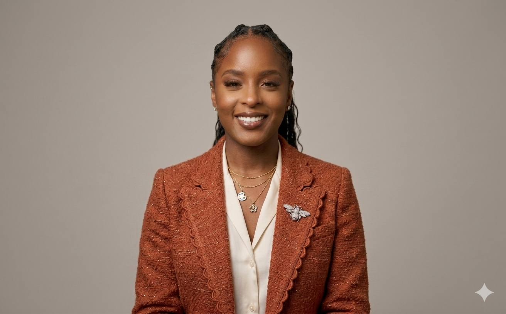

Meet the Founder
Hello! My name is Audjaneea Miller. I am the sole inventor, engineer, and programmer behind EcoStream. I am building a hardware company completely from scratch through relentless execution, turning an ambitious vision into reality on my own terms.
The idea for EcoStream grew out of a common daily frustration: wanting a soothing, warm lotion application experience without dealing with cold formulas or constantly asking family members to help apply lotion to hard-to-reach areas. I realized that a luxury, heated skincare application system could bring physical comfort and independence to millions of users worldwide.
To bring this product to life, I mastered the process of end-to-end execution. I mapped out the schematics, sourced the manufacturing protocols, and built the digital platform you are browsing right now. I did this without a massive corporate team or an outside technical department.
Every milestone achieved for EcoStream was forged in the hours between my life's non-negotiable commitments:
This journey demands obsessive time management, grit, and a strong conviction in the value of the product. By supporting EcoStream, you are not just backing a smart device; you are investing in a lean, hyper-efficient operation led by a founder who knows exactly how to build, deploy, and scale with minimal overhead.
Ready to back execution and accelerate our production timeline?
Back the Project & Pre-Order Now